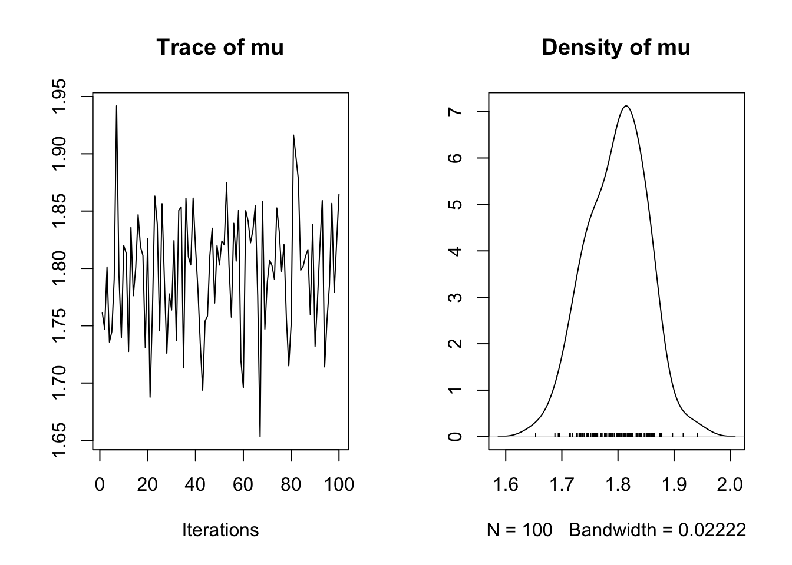
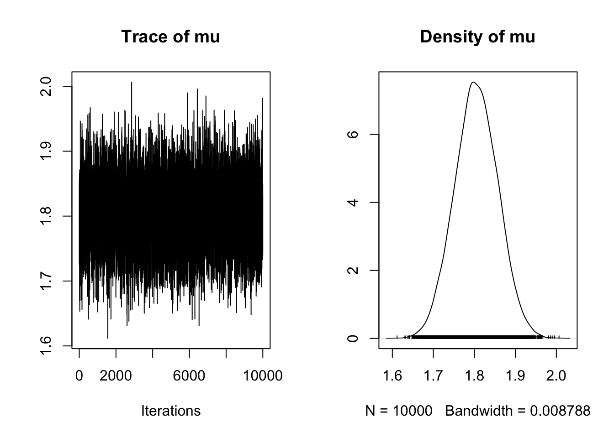
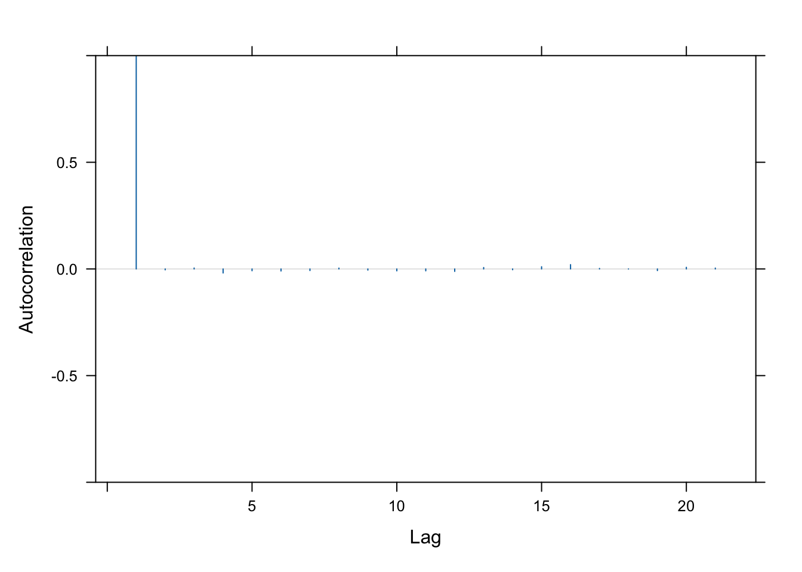
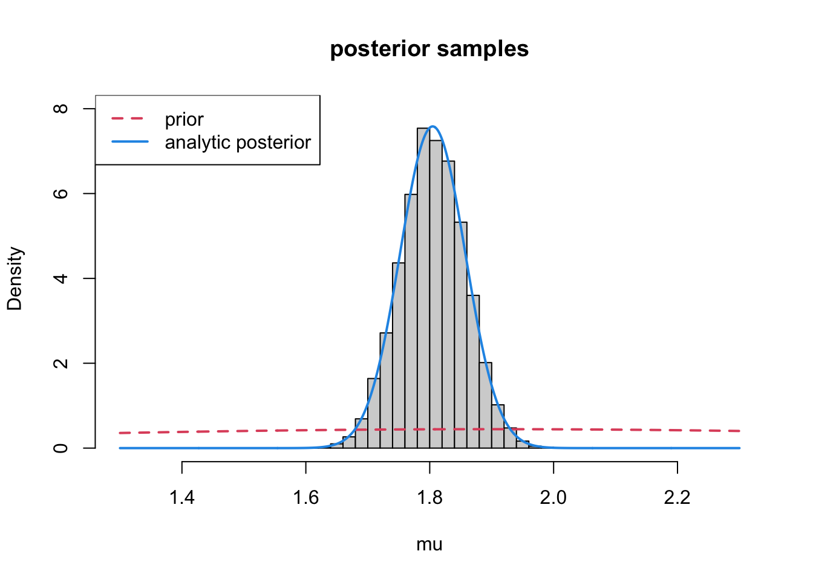
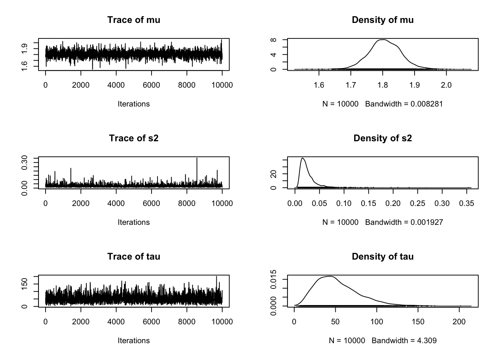
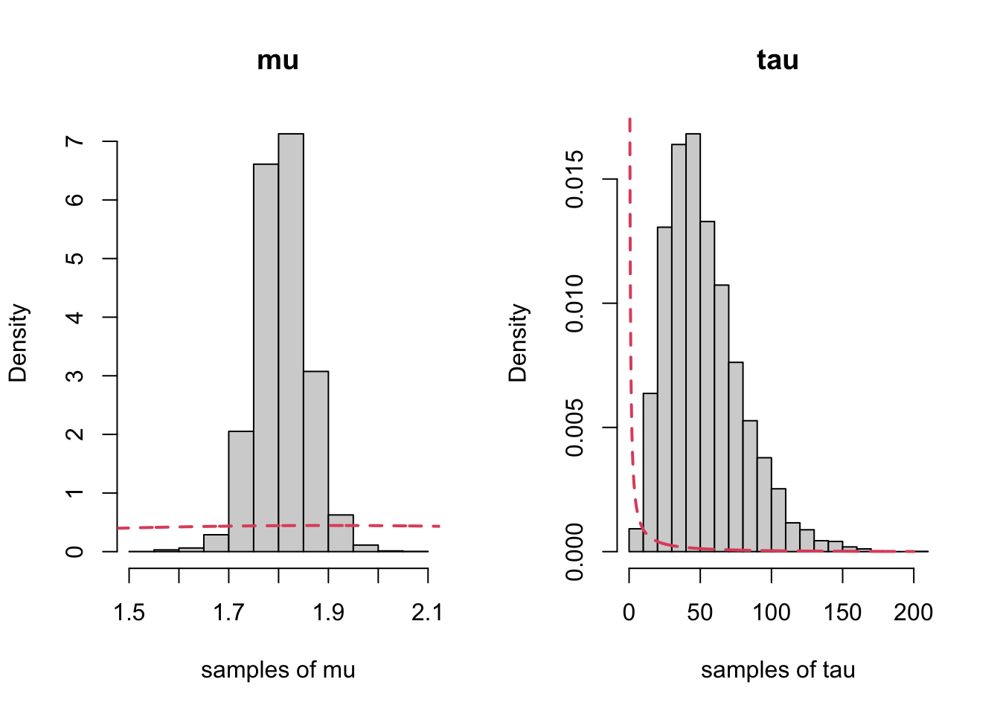
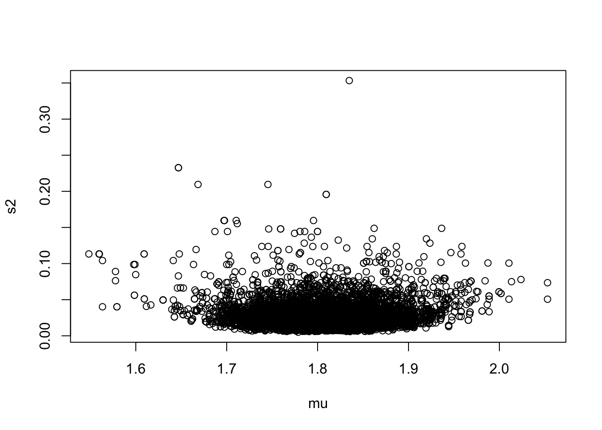
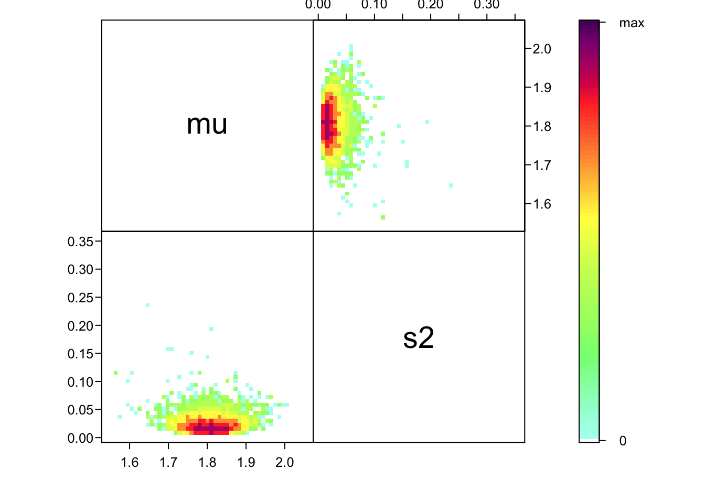

# Load libraries
require(nimble)
require(HDInterval)
library(MCMCvis)
require(coda) # makes diagnostic plots
require(IDPmisc) # makes nice colored pairs plots to look at joint posteriors
##require(mcmcplots) # another option for diagnostic plots, currently unusedIntroduction to Bayesian Methods
Activity 2A: Analytic vs. Numeric Bayesian analysis
Introduction
This section is focused on practicing the basics of Bayesian analysis (both analytic practice and computation using nimble) for simple uni-modal data. This section assumes that you have seen both of the Bayes lectures (here, and here). We’ll review some of the analytic results so that you can compare the results from the previous activity to numerical results while also learning about how to check your computation. We suggest some more advanced things to try for those interested in implementing your own models.
Packages and tools
For this practical you will need to first install nimble, then be sure to install the following packages:
Fitting Models the Bayesian way
Recall from the lectures (see above for links!) that in order to make inference statements (for example, credible intervals) that we need to either 1) known the full form of the posterior distribution or 2) have numerical samples from the target distribution. For the second option, we need the samples to be good – that is they need to be samples from the posterior and we need the samples in the Markov Chain to be not too highly correlated with each other. Thus our numerical steps in our analysis would be as follows:
Implement and fit the model using your tools of choice
Assess MCMC convergence: MCMC is family of algorithms for sampling from probability distributions (e.g., a posterior distribution in a Bayesian analysis). The MCMC procedure reaches convergence once the algorithm is taking draws from the posterior and not still trying to figure it out. To assess convergence our primary tool is to we look at trace plots (i.e., parameter samples taken in order, like a time series). The goal is to get traces that look like “fuzzy caterpillars”.
Summarize MCMC draws: Summarize and visualize outcome of the random draws using histograms for all draws for each parameter, and calculate expectation, variance, credibility interval, etc.
Prior Sensitivity: Assess prior sensitivity by changing prior values and checking the extent to which it affects the results. If it does, that means that the results may be too sensitive to that prior, usually not good!
Make inferences: We use the values from item (2) to make inferences and answer the research question.
We’ll review the example data, and the analytic likelihoods before moving on to the computational approximation of the posterior using nimble, and go through each of these steps.
Example: Midge Wing Length
We will use this simple example to go through the steps of assessing a Bayesian model and we’ll see that MCMC can allow us to approximate the posterior distribution.
Grogan and Wirth (1981) provide data on the wing length (in millimeters) of nine members of a species of midge (small, two-winged flies).
From these measurements we wish to make inference about the population mean \mu.
# Load data
WL.data <- read.csv("MidgeWingLength.csv")
Y <- WL.data$WingLength
n <- length(Y)
hist(Y,breaks=10,xlab="Wing Length (mm)") We’ll also need summary statistics for the data that we calculated last time:
m<-sum(Y)/n
s2<-sum((Y-m)^2)/(n-1)Recall: Setting up the Bayesian Model
We need to define the likelihood and the priors for our Bayesian analysis. Given the analysis that we’ve just done, let’s assume that our data come from a normal distribution with unknown mean, \mu but that we know the variance is \sigma^2 = 0.025. That is: \mathbf{Y} \stackrel{\mathrm{iid}}{\sim} \mathcal{N}(\mu, 0.025^2)
In the last activity we our prior for \mu to be be: \mu \sim \mathcal{N}(1.9, 0.8^2) Together, then, our full model is: \begin{align*} \mathbf{Y} & \stackrel{\mathrm{iid}}{\sim} \mathcal{N}(\mu, 0.025^2)\\ \mu &\sim \mathcal{N}(1.9, 0.8^2) \end{align*}
In the previous activity we wrote a function to calculate \mu_p and \tau_p and then plugged in our numbers:
tau.post<-function(tau, tau0, n){n*tau + tau0}
mu.post<-function(Ybar, mu0, sig20, sig2, n){
weight<-sig2+n*sig20
return(n*sig20*Ybar/weight + sig2*mu0/weight)
}Finally we plotted 3 things together – the data histogram, the prior, and the posterior
mu0 <- 1.9
s20 <- 0.8
s2<- 0.025 ## "true" variance
mp<-mu.post(Ybar=m, mu0=mu0, sig20=s20, sig2=s2, n=n)
tp<-tau.post(tau=1/s2, tau0=1/s20, n=n)x<-seq(1.3,2.3, length=1000)
hist(Y,breaks=10,xlab="Wing Length (mm)", xlim=c(1.3, 2.3),
freq=FALSE, ylim=c(0,8))
lines(x, dnorm(x, mean=mu0, sd=sqrt(s20)), col=2, lty=2, lwd=2) ## prior
lines(x, dnorm(x, mean=mp, sd=sqrt(1/tp)), col=4, lwd=2) ## posterior
legend("topleft", legend=c("prior", "posterior"), col=c(2,4), lty=c(2,1), lwd=2)Numerical evaluation of the posterior with nimble
Let’s show that we can get the same thing from nimble that we were able to get from the analytic results. You’ll need to make sure you have installed nimble (which must be done outside of R) and then the R libraries {\tt coda} and {\tt nimble}.
Specifying the model
First we must encode our choices for our data model and priors to pass them to the fitting routines in nimble. This involves setting up a {\tt model} that includes the likelihood for each data point and a prior for every parameter we want to estimate. Here is an example of how we would do this for the simple model we fit for the midge data (note that nimble uses the precision instead of the variance or sd for the normal distribution):
modelCode <- nimbleCode({
## Likelihood
for(i in 1:n){
Y[i] ~ dnorm(mu,tau)
}
## Prior for mu
mu ~ dnorm(mu0,tau0)
} ## close model
)This model is formally in the BUGS language (also used by JAGS, WinBugs, etc). Now we will create the nimble model
model1 <- nimbleModel(code = modelCode, name = "model1",
constants = list(tau=1/s2, mu0=mu0,
tau0=1/s20, n=n),
data = list(Y=Y),
inits = list(mu=5))Defining modelBuilding modelSetting data and initial valuesRunning calculate on model
[Note] Any error reports that follow may simply reflect missing values in model variables.Checking model sizes and dimensionsmodel1$getNodeNames() [1] "mu" "Y[1]" "Y[2]" "Y[3]" "Y[4]" "Y[5]" "Y[6]" "Y[7]" "Y[8]" "Y[9]"## just checking it can compile
Cmodel1<- compileNimble(model1)Compiling
[Note] This may take a minute.
[Note] Use 'showCompilerOutput = TRUE' to see C++ compilation details.Then we run the MCMC and, see how the output looks for a short chain:
mcmc.out <- nimbleMCMC(code = modelCode,
constants = list(tau=1/s2, mu0=mu0,
tau0=1/s20,n=n),
data = list(Y=Y),
inits = list(mu=5),
nchains = 1, niter = 100,
#summary = TRUE, WAIC = TRUE,
monitors = c('mu'))Defining modelBuilding modelSetting data and initial valuesRunning calculate on model
[Note] Any error reports that follow may simply reflect missing values in model variables.Checking model sizes and dimensionsChecking model calculationsCompiling
[Note] This may take a minute.
[Note] Use 'showCompilerOutput = TRUE' to see C++ compilation details.running chain 1...|-------------|-------------|-------------|-------------|
|-------------------------------------------------------|dim(mcmc.out)[1] 100 1head(mcmc.out) mu
[1,] 1.721479
[2,] 1.739015
[3,] 1.738126
[4,] 1.822810
[5,] 1.762023
[6,] 1.825605samps<-as.mcmc(mcmc.out)
plot(samps)
MCMC is a rejection algorithm that often needs to converge or “burn-in” – that is we need to potentially move until we’re taking draws from the correct distribution. Unlike for optimization problems, this does not mean that the algorithm heads toward a single value. Instead we’re looking for a pattern where the draws are seemingly unrelated and random. To assess convergence we look at trace plots, the goal is to get traces that look like “fuzzy caterpillars”.
Sometimes at the beginning of a run, if we start far from the area near the posterior mean of the parameter, we will instead get something that looks like a trending time series. If this is the case we have to drop the samples that were taken during the burn-in phase. Here’s an example of how to do that, also now running 2 chains simultaneously.
mcmc.out <- nimbleMCMC(code = modelCode,
constants = list(tau=1/s2, mu0=mu0,
tau0=1/s20,n=n),
data = list(Y=Y),
inits = list(mu=5),
nchains = 2, niter = 11000,
nburnin = 1000,
#summary = TRUE, WAIC = TRUE,
monitors = c('mu'))Defining modelBuilding modelSetting data and initial valuesRunning calculate on model
[Note] Any error reports that follow may simply reflect missing values in model variables.Checking model sizes and dimensionsChecking model calculationsCompiling
[Note] This may take a minute.
[Note] Use 'showCompilerOutput = TRUE' to see C++ compilation details.running chain 1...|-------------|-------------|-------------|-------------|
|-------------------------------------------------------|running chain 2...|-------------|-------------|-------------|-------------|
|-------------------------------------------------------|dim(mcmc.out$chain1)[1] 10000 1head(mcmc.out$chain1) mu
[1,] 1.767302
[2,] 1.831650
[3,] 1.838704
[4,] 1.807694
[5,] 1.822508
[6,] 1.857017samp<-as.mcmc(mcmc.out$chain1)
plot(samp)
This is a very fuzzy caterpillar!
We also often want to check the autocorrelation in the chain.
acfplot(samp, lag=20, aspect="fill", ylim=c(-1,1))
This is really good! It means that the samples are almost entirely uncorrelated.
Finally we can also use the summary function to examine the samples generated:
summary(samp)
Iterations = 1:10000
Thinning interval = 1
Number of chains = 1
Sample size per chain = 10000
1. Empirical mean and standard deviation for each variable,
plus standard error of the mean:
Mean SD Naive SE Time-series SE
1.8039445 0.0523320 0.0005233 0.0005233
2. Quantiles for each variable:
2.5% 25% 50% 75% 97.5%
1.701 1.768 1.804 1.840 1.905 Let’s compare these draws to what we got with our analytic solution:
x<-seq(1.3,2.3, length=1000)
hist(samp, xlab="mu", xlim=c(1.3, 2.3),
freq=FALSE, ylim=c(0,8), main ="posterior samples")
lines(x, dnorm(x, mean=mu0, sd=sqrt(s20)), col=2, lty=2, lwd=2) ## prior
lines(x, dnorm(x, mean=mp, sd=sqrt(1/tp)), col=4, lwd=2) ## posterior
legend("topleft", legend=c("prior", "analytic posterior"), col=c(2,4), lty=c(2,1), lwd=2)
It worked!
As with the analytic approach, it’s always a good idea when you run your analyses to see how sensitive is your result to the priors you choose. Unless you are purposefully choosing an informative prior, we usually want the prior and posterior to look different, as we see here. You can experiment yourself and try changing the prior to see how this effects the posterior.
Practice: Applying to a new dataset
Download VecTraits dataset 562 (Kutcherov et al. 2018. Effects of temperature and photoperiod on the immature development in Cassida rubiginosa Mull. and C. stigmatica Sffr. (Coleoptera: Chrysomelidae). Sci. Rep. 9: 10047). This dataset explores the effects of temperature and photoperiod on body size (weight in mg) for Cassida stigmatica, a type of small beetle. Subset the data so you focus on one temperature/photoperiod combination (you could also choose to subset by sex). Using the same model as above, potentially with a different prior distribution, and with the value of \tau set to 1/s^2 (where s is the empirical standard deviation of your dataset), redo the analysis above.
Optional Advanced Exercise: Estimating the population variance
One advantage of the numerical approach is that we can choose almost anything we want for the priors on multiple parameters without worrying if they are conjugate, or if we want to include additional information. For example, let’s say that we want to force the mean to be positive (and also the data, perhaps), and concurrently estimate the variance. Here is a possible model:
modelCode2 <- nimbleCode({
## Likelihood
for(i in 1:n){
Y[i] ~ T(dnorm(mu,tau),0, ) ## truncates at 0
}
## Prior for mu
mu ~ T(dnorm(mu0,tau0), 0,)
# Prior for the precision
tau ~ dgamma(a, b)
# Compute the variance
s2 <- 1/tau
} ## close model
)## hyperparams for tau
a <- 0.01
b <- 0.01
## alternative approach -- save constants, data, etc,
## as lists outside the function
modConsts2 <- list(mu0=mu0,tau0=1/s20, a=a, b=b, n=n)
modData2 <- list(Y=Y)
modInits2 <- list(mu=5, tau=1/s2)
model2 <- nimbleModel(code = modelCode2, name = "model2",
constants = modConsts2,
data = modData2,
inits = modInits2)Defining modelBuilding modelSetting data and initial valuesRunning calculate on model
[Note] Any error reports that follow may simply reflect missing values in model variables.Checking model sizes and dimensionsmodel2$getNodeNames() [1] "mu" "tau"
[3] "lifted_d1_over_sqrt_oPtau_cP" "s2"
[5] "Y[1]" "Y[2]"
[7] "Y[3]" "Y[4]"
[9] "Y[5]" "Y[6]"
[11] "Y[7]" "Y[8]"
[13] "Y[9]" ## just checking it can compile
Cmodel2<- compileNimble(model2)Compiling
[Note] This may take a minute.
[Note] Use 'showCompilerOutput = TRUE' to see C++ compilation details.mcmc.out2 <- nimbleMCMC(code = modelCode2,
constants = modConsts2,
data = modData2,
inits = modInits2,
nchains = 2, niter = 11000,
nburnin = 1000,
#summary = TRUE, WAIC = TRUE,
monitors = c('mu', 's2', 'tau'))Defining modelBuilding modelSetting data and initial valuesRunning calculate on model
[Note] Any error reports that follow may simply reflect missing values in model variables.Checking model sizes and dimensionsChecking model calculationsCompiling
[Note] This may take a minute.
[Note] Use 'showCompilerOutput = TRUE' to see C++ compilation details.running chain 1...|-------------|-------------|-------------|-------------|
|-------------------------------------------------------|running chain 2...|-------------|-------------|-------------|-------------|
|-------------------------------------------------------|dim(mcmc.out2$chain1)[1] 10000 3head(mcmc.out2$chain1) mu s2 tau
[1,] 1.808496 0.01109125 90.16114
[2,] 1.794911 0.01148990 87.03293
[3,] 1.794911 0.01148990 87.03293
[4,] 1.794911 0.01020260 98.01426
[5,] 1.794911 0.01020260 98.01426
[6,] 1.772257 0.01403102 71.27067samp2<-as.mcmc(mcmc.out2$chain1)plot(samp2)
summary(samp2)
Iterations = 1:10000
Thinning interval = 1
Number of chains = 1
Sample size per chain = 10000
1. Empirical mean and standard deviation for each variable,
plus standard error of the mean:
Mean SD Naive SE Time-series SE
mu 1.80637 0.05235 0.0005235 0.0011577
s2 0.02543 0.01657 0.0001657 0.0003911
tau 51.96635 25.83741 0.2583741 0.6767042
2. Quantiles for each variable:
2.5% 25% 50% 75% 97.5%
mu 1.70426 1.77240 1.806 1.83893 1.91792
s2 0.00896 0.01499 0.021 0.03055 0.06666
tau 15.00182 32.73685 47.618 66.69136 111.60536Now we plot each with their priors:
par(mfrow=c(1,2), bty="n")
hist(samp2[,1], xlab="samples of mu", main="mu", freq=FALSE)
lines(x, dnorm(x, mean=mu0, sd=sqrt(s20)),
col=2, lty=2, lwd=2) ## prior
x2<-seq(0, 200, length=1000)
hist(samp2[,3], xlab="samples of tau", main="tau", freq=FALSE)
lines(x2, dgamma(x2, shape = a, rate = b),
col=2, lty=2, lwd=2) ## prior
We also want to look at the joint distribution of \mu and \sigma^2:
plot(as.numeric(samp2[,1]), as.numeric(samp2[,2]),
xlab="mu", ylab="s2")
Or, a prettier plot:
ipairs(as.matrix(samp2[,1:2]), ztransf = function(x){x[x<1] <- 1; log2(x)})
Practice: Updating the model
Redo the previous analysis placing a gamma prior on \mu as well. Set the prior so that the mean and variance are the same as in the normal example from above (use moment matching). Do you get something similar?